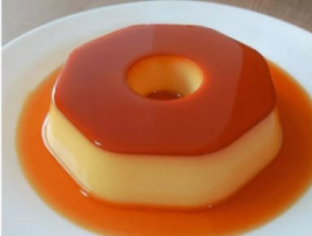

PUDIM DE LEITE-CONDENSADO

INGREDIENTES
- 3 latas de leite condensado (350ml/l)
- 1l de leite
- 6 ovos
- 1 colher(de chá) de essência de baunilha
ingredientes para calda
- Calda
- 1 e 1/2 xicara de açucar
- água 1 xicara de água
MODO DE PREPARO
- adicione em um liquidificador os ovos
- logo em seguida o leite condensado
- e bata por 3 minutos
- depois adicione a metade do leite
- em seguida coloque a essência de baunilha
- e bata no liquidificador por mais 1 minuto
- em seguida adicione o restante do leite
- e bata por mais 30 segundos
- e reserve